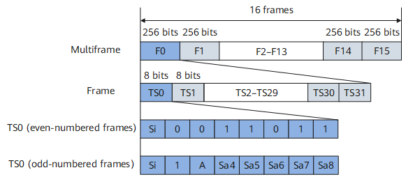

Frame Structure in CE1 Mode
Figure 1 shows the frame structure in CE1 mode.
Figure 1 Frame structure in CE1 mode
The fields in the frame structure in CE1 mode are described as follows:
- F0 to F15: 16 E1 frames, which form a multiframe (MF) in CE1 mode. The length of each E1 frame is 256 bits.
- TS0 to TS31: 32 timeslots in an E1 frame. TS0 is the frame synchronization code and is used to transmit frame alignment signals, CRC-4 bits, and peer alarms. The length of each timeslot is 8 bits.
- TS0 (even-numbered frames): used for frames F0, F2, F4, F6, F8, F10, F12, and F14.
- TS0 (odd-numbered frames): used for frames F1, F3, F5, F7, F9, F11, F13, and F15.
- Si: bit reserved for international use. When the frame format in CE1 mode is CRC-4, this bit is used for CRC-4 check.
- A: remote alarm indication. When there is no interference, this bit is set to 0. When an alarm is generated, this bit is set to 1.
- Sa4 to Sa8: other reserved bits. In some scenarios, the peer device verifies the received Sa content. The Sa configuration must be completed on the local device to ensure normal interconnection with the peer device.